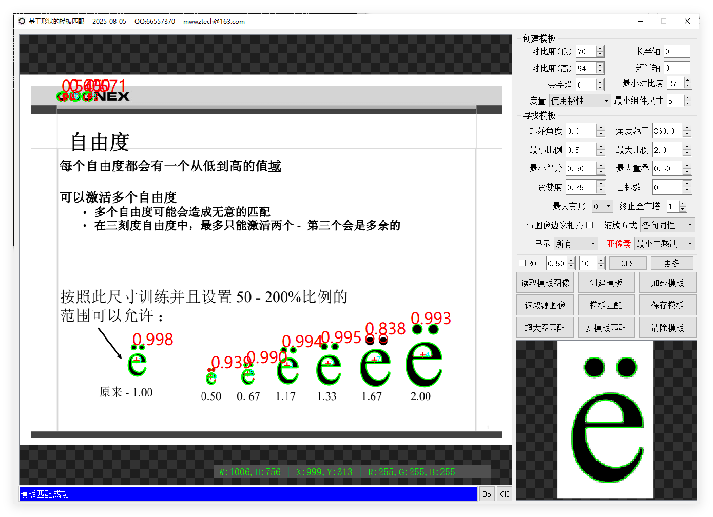
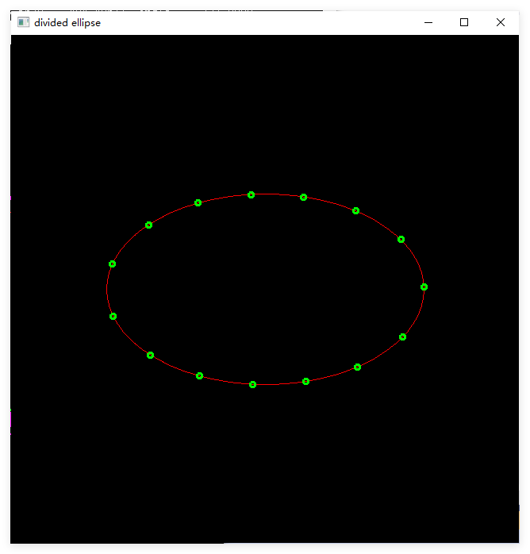
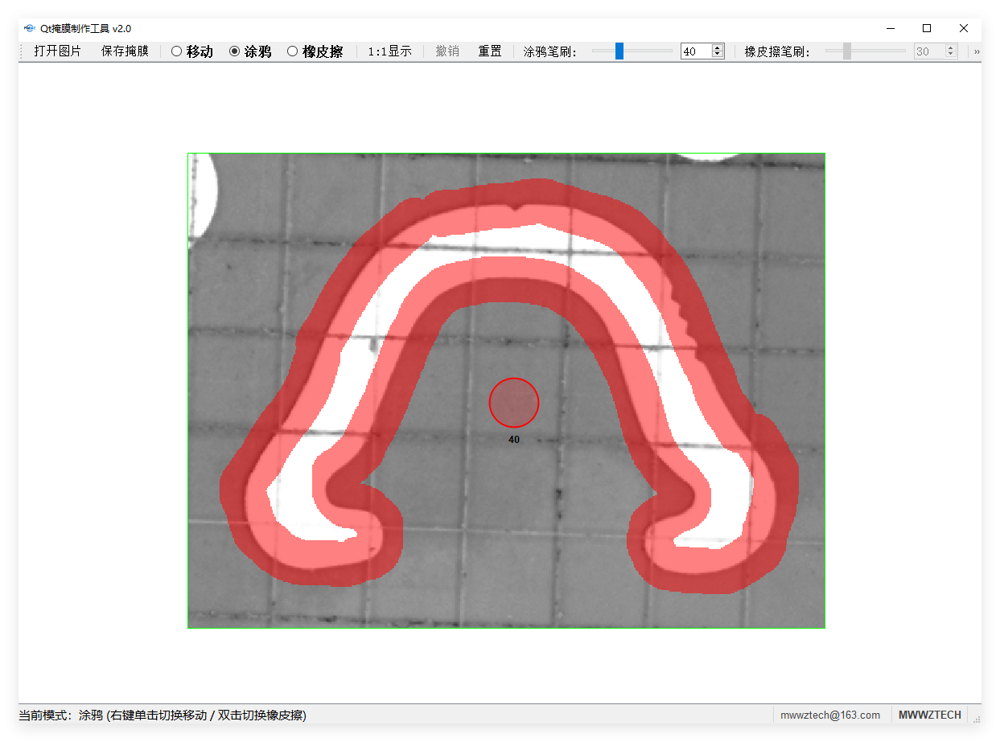
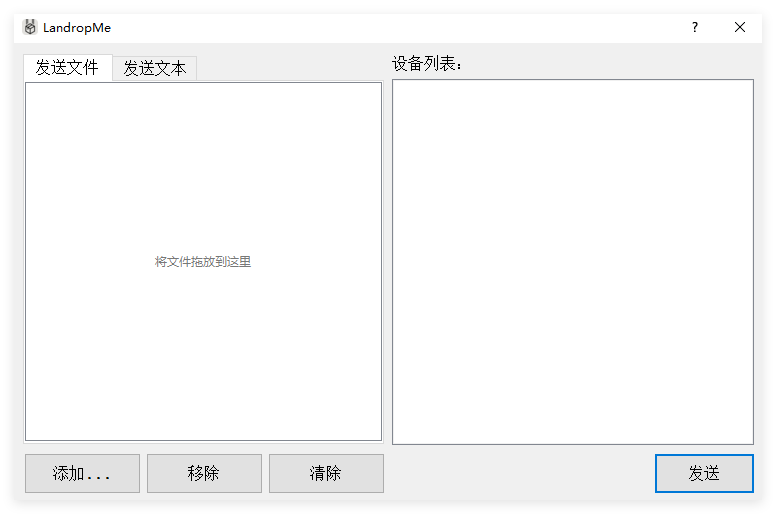

3核心算法模块
4开发语言：C / C++ / C# / Python
4操作系统：Windows / Linux / Ubuntu / Android
3CPU 架构：x86 / x86_64 / aarch64
产品与演示
先下载演示，再决定是否授权
以下演示程序覆盖模板匹配、2D 测量、形态学与专用应用。具体功能、平台与依赖以下载包内说明为准。
算法模块



工具与应用



Bin Packing
装箱 / 排样算法演示。
Laser Cutting
激光切割路径演示。
演示程序以 Windows + MFC/QT 为主；正式 SDK 支持 C / C++ / C# / Python 与 Windows / Linux / Ubuntu / Android，具体模块可用性请沟通。RAR 包请使用 7-Zip / WinRAR 解压；视频文件较大，建议在 Wi-Fi 下观看。
视频演示
形状匹配的实际运行效果
下面这段视频演示形状模板匹配的运行过程。视频约 26 MB，已设置为点击后加载，不会在打开首页时自动下载。
建议在 Wi-Fi 环境下观看。
平台与语言
跨语言、跨平台、跨架构集成
同一套算法能力，支持主流开发语言、操作系统和 CPU 架构，方便嵌入现有视觉系统。
开发语言
CC++C#Python
操作系统
WindowsLinuxUbuntuAndroid
CPU 架构
x86x86_64aarch64
具体模块在不同平台/架构上的可用性，以实际版本与沟通结果为准。
为什么选择 MWWZTech
把“能用”做成“好集成、可维护”
不追求大而全，专注工业视觉里最常用的匹配、测量与形态学能力。
算法自研
形状模板匹配、2D 测量、区域形态学等核心算法自研，持续迭代。
轻量集成
支持 C / C++ / C# / Python，覆盖 Windows / Linux / Ubuntu / Android，便于嵌入现有项目。
成本可控
按项目 / 模块授权，避免整套商业视觉库的高额授权费。
中文支持
直接对接研发，中文文档与技术博客，沟通成本低。
选型对比
替代 HALCON，先看这几个维度
如果你正在评估 HALCON 的替代方案，建议从授权、部署、二次开发、支持和成本五个方面对比。
| 维度 | MWWZTech | 传统商业视觉库（如 HALCON） |
|---|---|---|
| 授权方式 | 按项目 / 模块授权 | 通常按开发版 + 运行版 / 模块授权 |
| 部署方式 | Windows / Linux / Ubuntu / Android，支持 C / C++ / C# / Python | 安装运行时，按授权方式部署 |
| 二次开发 | C / C++ / C# / Python 接口 + MFC / QT 示例 | HDevelop + 自有 API 体系 |
| 技术支持 | 中文，直接对接研发 | 厂商 / 代理技术支持体系 |
| 适用场景 | 定位、测量、形态学等固定任务 | 功能覆盖广，生态成熟 |
| 成本 | 按项目可控 | 通常较高，按模块计费 |
表中为一般性对比，具体以实际版本与商务条款为准。HALCON 是 MVTec Software GmbH 的注册商标，本站与 MVTec 无关联。
应用场景
这些任务，用轻量算法就能覆盖
定位与对位
形状模板匹配用于工件定位、角度校正、有无检测。
尺寸测量
2D 测量用于长度、角度、圆、直线等尺寸检测。
区域处理
区域形态学用于去噪、分割、缺陷区域处理。
接触角 / 液滴
接触角测量用于润湿性、表面处理效果评估。
文档与技术文章
把实现细节写下来
开发笔记记录了算法实现、HALCON 替代实践与工程问题处理。
关于 MWWZTech
专注工业视觉算法，做可落地的替代方案
MWWZTech 专注于工业机器视觉算法研发，提供 HALCON 的轻量替代方案。核心能力包括基于形状的模板匹配、2D 测量、区域形态学与专用测量应用。
目前已提供 MFC / QT 演示程序；正式 SDK 支持 C / C++ / C# / Python 与 Windows / Linux / Ubuntu / Android，支持按项目授权与定制合作。我们更关注算法在真实产线上的稳定性、集成成本与可维护性。
- 自研算法核心算法自主实现，持续迭代。
- 可先评估演示程序直接下载，先验证再合作。
- 中文支持直接对接研发，沟通成本低。
- 按项目授权按实际模块与规模授权。
常见问题
合作前，你可能会问
MWWZTech 能直接替换 HALCON 吗？
不是 API 级直接替换，而是提供同类算法能力。已有项目需要按接口、算子和场景做迁移评估。
支持哪些平台和开发语言？
支持 C、C++、C#、Python；操作系统支持 Windows、Linux、Ubuntu、Android；CPU 架构支持 x86、x86_64、aarch64。具体模块在不同平台上的可用性，以实际版本和沟通结果为准。
如何授权和收费？
按项目 / 模块授权。具体范围与报价，请提供应用场景、图像尺寸和节拍要求后沟通。
演示程序有时间限制吗？
演示程序用于评估，正式使用需获得授权；具体限制以演示包内说明为准。
是否提供源码或定制？
视合作方式而定，可沟通定制开发与技术支持。